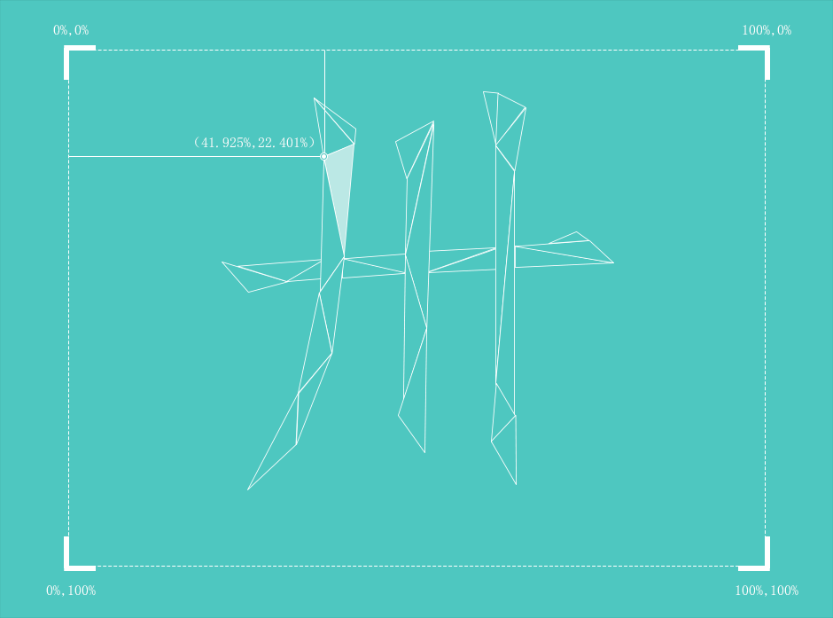

制作过程
自从听到CSS多边形,我一直有点惊讶的缺乏轰动的技术,所以我想创造一些不仅工作本身作为一个项目,但这也推动未充分利用的代码尽可能。
shard-shifting功能在webkit浏览器只工作,这当然是一种限制,但同时,它几乎完全基于webkit的移动。Firefox支持clip-path属性,但作为一个SVG引用的形状,因此,编码运动在一个完全不同的方式工作。我想重点纯CSS的路线。
没听说过吗?在这里,以一条线:
-webkit-clip-path:多边形(40% - 40%,50% - 60%,60% - 40%);
所以,本质上,每个形状演变,移动和玩弄的一套新的坐标,和他们保持三角形,这意味着3点,用CSS转换连接动作。没有使用技巧或工具得到了结果,在代码级别上或图形。逐点,形状的形状,每一个手工制作的插图后通过亲自缔造跟踪JS函数。

如果您对该技术或项目有任何问题，请联系 Yaavi!